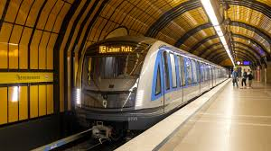
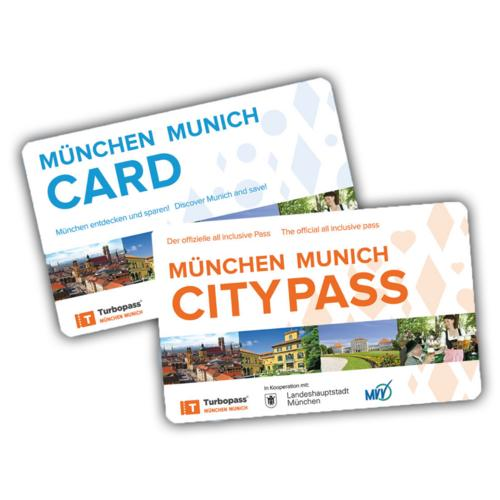

Thông tin tổng quan
Munich sở hữu mạng lưới đường sắt đô thị hiện đại gồm U-Bahn (tàu điện ngầm) và S-Bahn (tàu điện ngoại ô). Hai hệ thống cộng lại có 16 tuyến (8 tuyến U-Bahn và 8 tuyến S-Bahn) với khoảng 234 ga, kết nối trung tâm thành phố, các khu dân cư ngoại ô, các thị trấn lân cận và Sân bay Franz Josef Strauss. Nhờ sử dụng chung hệ thống vé và các ga trung chuyển, hành khách có thể di chuyển thuận tiện trên toàn vùng đô thị Munich bằng một mạng lưới giao thông công cộng thống nhất và hiệu quả.

Giá vé và thanh toán
Hệ thống vé của U-Bahn được tích hợp với xe buýt và xe điện. Vé cho quãng đường ngắn (tối đa hai điểm dừng) có giá 1,90 €, vé trong một khu vực là 3,70 € và hai khu vực là 5,60 €. Hành khách cũng có thể mua vé ngày không giới hạn từ 8,80 €. Đối với khách du lịch, thẻ CityTourCard cho phép sử dụng phương tiện công cộng không giới hạn và nhận ưu đãi tại nhiều điểm tham quan, nhà hàng và cửa hàng. Trẻ em dưới 6 tuổi được đi miễn phí, trong khi trẻ từ 6–14 tuổi được hưởng mức giá ưu đãi. Vé có thể mua tại quầy hoặc máy bán vé tự động trong ga; hệ thống không có cổng soát vé nên hành khách phải tự xác thực vé trước khi đi và giữ vé trong suốt hành trình để xuất trình khi được kiểm tra.
Các điểm tham quan nổi bật
Nhờ mạng lưới phủ rộng khắp thành phố, tàu điện ngầm Munich giúp du khách dễ dàng tiếp cận nhiều địa điểm nổi tiếng. Một số điểm tham quan tiêu biểu gồm Marienplatz – quảng trường trung tâm của thành phố, Frauenkirche – nhà thờ biểu tượng của Munich, Englischer Garten – một trong những công viên đô thị lớn nhất châu Âu, Schloss Nymphenburg – cung điện hoàng gia nổi tiếng, cùng BMW Museum – bảo tàng trưng bày lịch sử và các mẫu xe đặc trưng của BMW. Đây đều là những điểm đến hấp dẫn có thể tiếp cận thuận tiện bằng hệ thống U-Bahn.